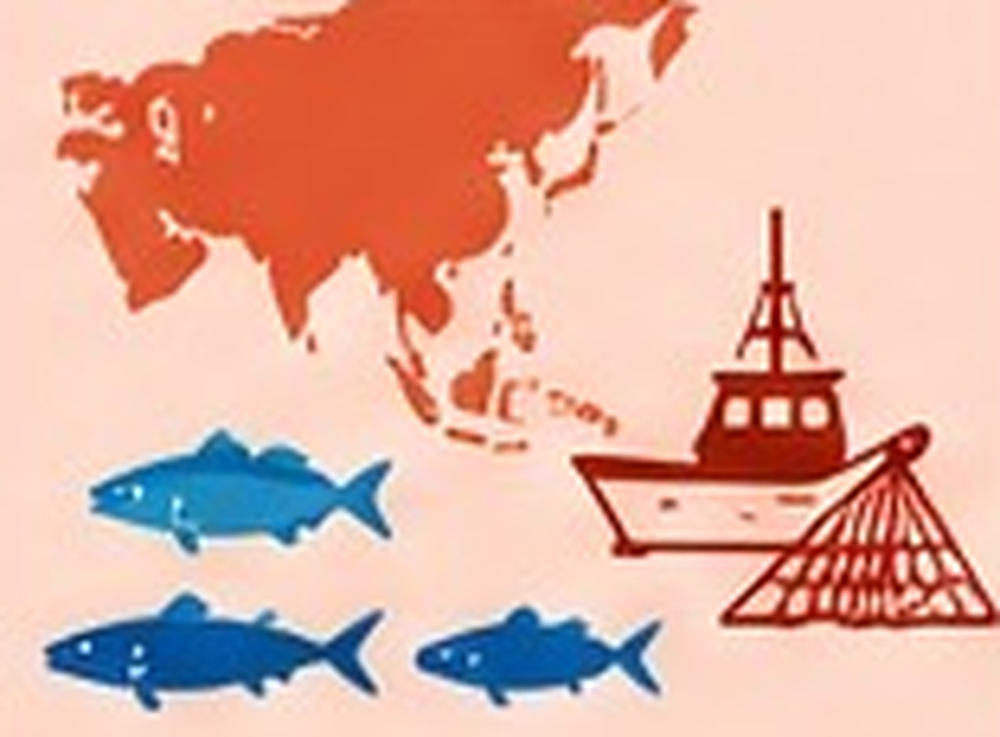

Asia
AsiaDraft
South, Southeast and East Asia
Asia supplies most of the world's marine wild catch, much of it from multispecies and multigear fleets in the tropics. This page describes the region's fisheries, institutions and data, lists the assessment tools in use with their limits and toolbox options, and gives case studies and training.
Key partners: SEAFDEC, BOBP-IGO, APFIC
Linked programmes: EAF-Nansen (Bay of Bengal), BOBLME (GEF), ISLME, YSLME (GEF)

Regional context
Asia combines the largest fishing fleet in the world with a large share of global marine catch, and most of that catch comes from small-scale and multispecies fisheries.
Fisheries and stocks at a glance
How many stocks are tracked, how well they are assessed, and how many are fished sustainably. FAO reports these figures by fishing area, and the two areas that cover most of tropical Asia use different tier definitions, so the bars should not be compared directly. Choose an area to view its figures.
Eastern Indian Ocean (FAO Area 57)
Western Central Pacific (FAO Area 71)
Stocks assessed by country
Eastern Indian Ocean (Area 57)
Status is shown only where the source reports it. The review reports overfished counts for Peninsular Malaysia, Sri Lanka and Thailand, and gives counts only for other countries.
Stock counts and status by country from the Asian assessment review 1. The share of stocks under management measures is not reported in the sources reviewed.
Management context and reporting layers
Each country reports through several layers, from its own agency to regional bodies, tuna commissions and FAO. The layers differ by country, so a country can answer to more than one body for the same species. The network view shows these links by subregion.
Network of countries, regional bodies and FAO
Choose a subregion to see each country's national agency or institute, the regional bodies and tuna commissions it belongs to, and how this connects to FAO reporting. Where one country is linked to several bodies, it reports through several layers.
Memberships from SEAFDEC, BOBP-IGO, IOTC and WCPFC lists.10, 11, 12, 13 South Asian agencies from the FIRMS workshop report.18 Agencies in italics are unreferenced and need checking with the countries. All countries also report directly to FAO through SDG 14.4.1.
Tools used in Asia
Compiled from the Asian stock assessment review, the APFIC assessment paper and SEAFDEC reports, which describe CPUE standardisation, yield per recruit and ASPIC in SEAFDEC work.1, 2, 8 Select a data situation, or the tool or method already in use, to see the other methods used in that situation with their limits and the FAO toolbox tool recommended instead or alongside.
| Data situation | Tool or method | What it does | Caveats and limitations | Tool recommendation |
|---|---|---|---|---|
| Catch and effort | ASPIC | Surplus production model | Needs a reliable effort or CPUE series. Sensitive to starting values. Limited treatment of uncertainty. | Switch to JABBA3. Keep ASPIC as cross-check. |
| Catch and effort | JABBA | Bayesian surplus production model | Needs an index that tracks abundance, and informative priors for data-poor stocks. | Use JABBA3. Prepare indices with cpueTargeting and JARA. |
| Catch-only | sraplus | Stock reduction analysis from catch (R package) | Results are driven by priors on resilience and depletion, so status is indicative only. | Switch to CMSY+ in JABBA3 and compare. |
| Catch-only | CMSY | Catch-only stock status | Prior-driven. Unreliable where catch does not track abundance, for example under changing effort or reporting. | Use CMSY+ in JABBA3. Add an index through BSM where available. |
| Length-based | LBSPR, LBB | Spawning potential ratio, relative biomass | Assume equilibrium and representative samples. Sensitive to M/K and asymptotic length. Poor fit for multigear catches. | Switch to FLicc, which includes both. Check data with FishualizeR. |
| Length-based | FiSAT | Length-frequency analysis (FAO-ICLARM) | Older software. Growth from length frequencies can be unstable and gives limited uncertainty. | Use TropFishR for growth and YPR, and FLicc for status. |
| Exploitation indicators | Exploitation ratio, F-factor, F-ratio | Indicators used in Indonesia, Thailand and Bangladesh | Depend on mortality estimates. Give no biomass or reference points, so cannot show stock status alone. | Supplement with FLicc SPR or JABBA3 status. |
| Multispecies and ecosystem | MMSY, species hub approach | Multispecies yield, grouping by trophic level | Data-hungry. Rest on assumptions about species interactions. | Use mmsyFM. |
| Multispecies and ecosystem | Ecopath with Ecosim | Ecosystem model | Needs diet and biomass data. Results depend on model structure, which is hard to validate. | Keep for context. Supplement with mmsyFM. |
| Multispecies and ecosystem | MERA (MSE) | Management strategy evaluation used in Indonesia | Results depend on the operating model assumed. | Switch to FLR mse. |
| Surveys and CPUE | Trawl surveys, standardised CPUE | Fishery-independent indices and CPUE standardisation | Survey coverage and series length vary. CPUE standardisation needs covariates for targeting and gear changes. | Use cpueTargeting, JARA and FishualizeR. |
Caveats are drafted from general stock assessment practice and need review by method experts. The FAO tools are described on Assessment methods.
Data situation
Stock status in the region is mostly reported through FIRMS, SOFIA and SDG 14.4.1 data calls, supplemented by national reports. Many stocks have no formal assessment, so catch-based and weight-of-evidence methods carry much of the load.4
Data sources
Where stock and catch information for the region comes from, from global databases to national sampling.
- FIRMS and SDG 14.4.1 data calls. Countries, regional databases and regional bodies report stock status through these channels.4, 6
- FAO catch statistics. For stocks without national data, FAO estimates status from FishStat catch and effort data.4
- National landing statistics. Long-running sampling systems record landings by species in some countries, and some countries run regular national assessment cycles.15
- Logbooks and observers. Industrial fisheries often keep logbooks, while artisanal fisheries rely on land-based collection and research surveys.15
- Vessel monitoring. Vessel monitoring covers part of the larger fleets and supports effort estimates.15
- Length sampling. Fishery-dependent length data support length-based methods.15
- Trawl surveys. Fishery-independent surveys support standardised CPUE.1
- Emerging sources. Remote sensing and vessel electronic data can inform assessments.2
Regional monitoring and capacity work
Regional programmes and networks that collect data or build assessment capacity across countries, as distinct from the routine data sources in the first tab.
- SEAFDEC landing surveys. Landing data on sharks and rays are collected at sites in several Southeast Asian countries.8
- Neritic tuna study. ASEAN member states took part in a population study that included DNA sampling.8
- BOBSAN. The Bay of Bengal Stock Assessment Network of government-nominated practitioners is coordinated by BOBP-IGO.14
- BOBSAN priorities. Members prioritised a regional catch and stock-status database, national assessment guidelines aligned with FAO, and documented success stories.14
- FAO pilot index. FAO has completed proof-of-concept updates of its State of Stocks Index for several areas, including a revised index for Area 57.2
- SoSI action plan. The 2025 SEAFDEC and FAO workshop produced an action plan to strengthen data collection and reporting.6
Typical pathways, gaps and research needs
Three common data situations in Asian fisheries share the same steps, from understanding the data to running assessments and giving management advice, but differ in what data exist, what works well, and what holds assessment back in that situation. Gaps that affect all three are listed after the cards. Where more than one source exists for a stock, methods can be run side by side and compared before advice is given. These pathways are our proposal for discussion and have not been checked with regional partners.
Data available
- Length samples from landing sites and trawl surveys
- Catch by gear
- Some life-history parameters
Done well
- Length sampling is routine in several national and regional programmes
- Length-based methods need few inputs and give a quick status check
Needs improvement
- Few species-level samples, and many missing life-history parameters
- Equilibrium assumptions fail for depleted trawl stocks
- Gear-specific length samples are scarce
Data available
- Logbook catch and effort, mostly from industrial fleets
- Long national landing series
- Survey indices in some areas
Done well
- Long landing series support trend analysis
- Surplus production models need only catch and an abundance index
Needs improvement
- Effort units are inconsistent and catchability drifts with technology
- Series are short, with little species-level catch
Data available
- National landings and FAO catch statistics
- Catch series for hundreds of stocks
Done well
- Catch-only methods bring hundreds of stocks into regional reporting
- Results are available quickly for screening
Needs improvement
- No abundance signal, so results follow priors
- A long, reliable catch history is needed, and an index or lengths for priority stocks
Gaps and research needs across all three situations
Gaps and limits that the sources reviewed identify for current practice in the region, which feed the discussion of better options on the overview page.
- Reporting in English. Recent assessment reports are rarely published in English.1
- Aggregated catch. A large share of production is reported in nei categories, which hides species composition.5
- Staff, funding and methods. Staff shortages, limited funding for surveys and non-standard methods hold back assessment and comparison between countries.14, 15
- Science to management. Links between scientists and managers are weak and assessments are generally weakly linked to management decisions, although data limitation is no reason to avoid management.1, 14
- Shared stocks. Management of transboundary stocks remains inadequate.15
- Independent surveys. Fishery-independent surveys are valuable for baselines and as indicators of stock change, and are underused.2
- Single-species approaches. Rarely adequate for tropical multispecies fisheries, and suited mainly to fisheries where one species is clearly targeted.1, 14
- Bio-economic modelling. The APFIC workshop identified a need for it to inform management of multispecies, multigear fisheries.2
- Uncertainty checks. Practitioners need to evaluate priors, model assumptions and sensitivity, especially for data-limited models.2
- Inland data. Inland catches may be underestimated because many countries struggle to collect data.3
Case studies from Asia
Four cases from the Asian assessment review, in the common case study format. Fields marked "To be added" are not stated in the sources reviewed so far.
Blue swimming crab, north-west Sri Lanka
Single-species assessment tied to a harvest strategy- Fishery
- Crab fishery in north-west Sri Lanka
- Species
- Blue swimming crab
- How it was managed
- Assessment linked to a harvest strategy, which led to effective management2
- Tools used
- Spawning potential ratio (SPR) based assessment, a single-species approach
- Data and period
- To be added
- Result
- SPR of 0.37, classed as sustainable1
- Key lesson
- A single-species approach suits a clearly targeted species1
- Reference
- Source 1
- Toolbox page
- Method selector; related tool FLicc (LBSPR)
Grouper fisheries, Saleh Bay, Indonesia
Harvest strategy built by many partners- Fishery
- Grouper fisheries in Saleh Bay
- Species
- Groupers
- How it was managed
- Assessment linked to a harvest strategy developed by researchers, government, fishers, industry and NGOs2
- Tools used
- To be added
- Data and period
- To be added
- Result
- Effective management action linked to the assessment1
- Key lesson
- Collaboration across researchers, government, fishers, industry and NGOs supported uptake2
- Reference
- Sources 1, 2
- Toolbox page
- Advice and MSE
Hilsa shad, India and Bangladesh
A shared stock assessed in two countries- Fishery
- Hilsa fisheries in India and Bangladesh
- Species
- Hilsa shad
- How it was managed
- To be added
- Tools used
- To be added
- Data and period
- To be added
- Result
- Overfished in India (B/Bmsy 0.21); overfishing flagged in Bangladesh (B/Bmsy 0.96)1
- Key lesson
- To be added
- Reference
- Source 1
- Toolbox page
- Method selector
Andaman and Nicobar Islands, India
Catch-only assessment of many stocks- Fishery
- Fisheries of the Andaman and Nicobar Islands
- Species
- 11 stocks
- How it was managed
- To be added
- Tools used
- CMSY, a catch-only method
- Data and period
- Catch series; period to be added
- Result
- 9 stocks sustainable, 2 fully exploited1
- Key lesson
- Catch-only methods can screen many stocks where data are limited1
- Reference
- Source 1
- Toolbox page
- CMSY+ in Assessment methods (JABBA3)
Workshops and training
| Workshop | Date | Materials |
|---|---|---|
| SEAFDEC and FAO consultative planning and training workshop on stock assessment, Southeast Asia (online)7 | 9 and 13–17 December 2021 | Materials |
| FAO regional workshop for a network of practitioners, South Asia (Bangkok)15 | January 2023 | Materials |
| BOBSAN Second Regional Dialogue and FAO validation workshop for Area 51 stocks, South Asia (Kochi)14 | 14–20 April 2024 | Materials |
| SEAFDEC and FAO regional workshop on the State of Stocks Index, Southeast Asia (Bangkok)6 | 8–10 September 2025 | Materials |
| Placeholder: regional workshop on stock assessment tools, East Asia | 15–17 March 2026 (placeholder) | Materials |
| Placeholder: national training on JABBA3 and FLicc, South Asia | 10–12 February 2026 (placeholder) | Materials |
| Placeholder: training on length-based methods, Southeast Asia | 5–7 May 2026 (placeholder) | Materials |
| Placeholder: upcoming workshop, South Asia | 8–10 June 2027 (placeholder) | Materials |
| Placeholder: upcoming workshop, Southeast Asia | 21–23 September 2027 (placeholder) | Materials |
| Placeholder: upcoming workshop, East Asia | 12–14 October 2027 (placeholder) | Materials |
FAO supports its members
Members with questions, ideas or feedback, or who would like to request training, a tool or help with a data gap, are welcome to reach out to FAO.